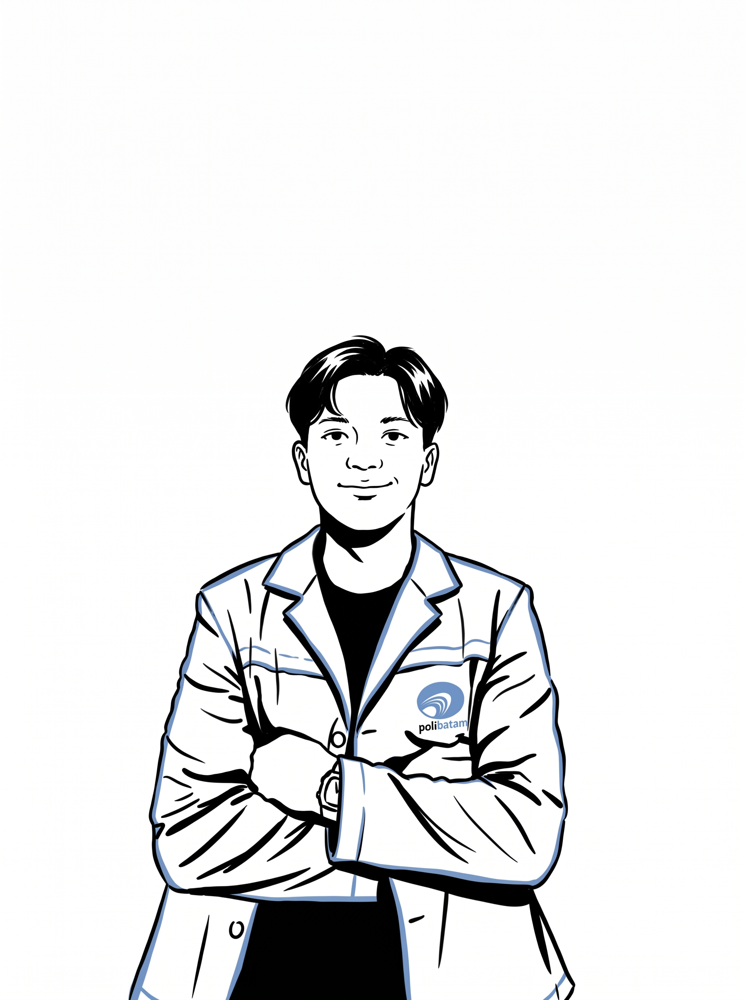
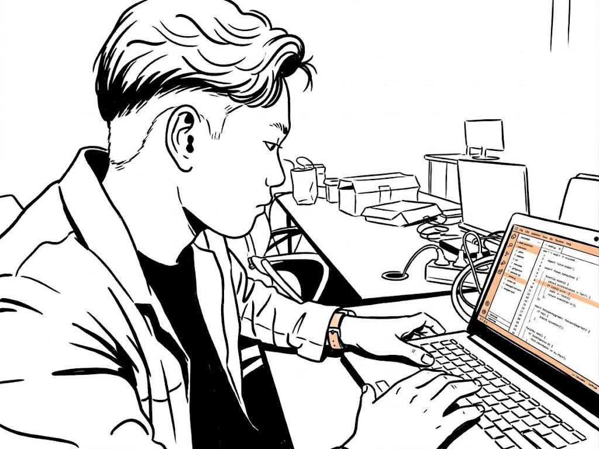

Veron Manasse Situmorang
Software Engineering Student & Maintenance AC
I am a Software Engineering student at Batam State Polytechnic who enjoys building web applications and exploring technology. I turn ideas into practical digital solutions through programming, problem-solving, and continuous learning.


About Me
I am a Diploma IV Software Engineering Technology student at Batam State Polytechnic, Indonesia. My interests include web development, backend systems, user interface design, and Internet of Things (IoT). Through academic projects and hands-on experience, I continue to improve my technical skills, collaborate with others, and build solutions that address real-world problems.
About Me
I am a Diploma IV Software Engineering Technology student at Batam State Polytechnic, Indonesia. My interests include web development, backend systems, user interface design, and Internet of Things (IoT). Through academic projects and hands-on experience, I continue to improve my technical skills, collaborate with others, and build solutions that address real-world problems.
Skills & Technologies
Selected Work
BenerinAja
A web platform for finding electronic appliance repair technicians in Batam, with category-based discovery and repair order tracking.
Laravel • PHP • Tailwind CSS
Guardian Stick
A smart cane project using sensors and IoT technology to support obstacle detection and user safety.
ESP32 • Sensors • IoT
Personal Portfolio
A personal portfolio website showcasing my profile, technical skills, experience, and software projects.
HTML • Tailwind CSS • JavaScript
Experience
IT Intern
Institut Teknologi Batam
Gained practical exposure to information technology operations and workplace practices while developing technical knowledge and problem-solving skills.
AC Maintenance Technician
Yayasan Pancaran Maitri
Carrying out air conditioning maintenance activities to support equipment performance and a comfortable working environment.
My Process
Discover
Understand the problem and user needs.
Design
Plan and design practical solutions.
Develop
Build features with clean, maintainable code.
Test & Deploy
Test functionality and prepare the release.
Improve
Learn from feedback and keep improving.
Let's build something meaningful together.
📍 Batam, Indonesia